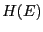
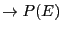
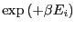
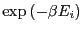
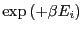
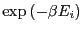

Next: The Algorithm
Up: Advanced Topics
Previous: Ewald Summation: Suggested Exercises
Densities of States: The Wang-Landau Monte Carlo Method
One of the most interesting recent developments in molecular
simulation are the so-called ``density of states'' methods, first
implemented by Wang and Landau [22,23]. In
principle, these techniques provide a route to calculating the density of states of a system of interest,  (Eq. 19). 6 Determining
(Eq. 19). 6 Determining  gives a
full understanding of the thermodynamics of a system, because the entropy
is calculable directly as
gives a
full understanding of the thermodynamics of a system, because the entropy
is calculable directly as
So, it is not undesirable at all to be able to compute .
Now, we know that is buried in the probability distribution
of energy that arises from standard NVT Monte Carlo simulation:
If we run a simple NVT MC simulation and populate a histogram of total
energy, , we can in principle compute by first
normalizing
 and multiplying each entry  by the factor
. The problem in practice
is that states for which the Boltzmann factor (
) is low are rarely if ever visited in reasonable time, and
the statistical strength of in such regions of energy is
therefore poor. Indeed, conventional MC is designed to not
cover all of energy space, but to perform importance sampling of
configurational space. Furthermore, if the Markov process is trapped
in a local minimum on the potential energy hypersurface, barrier
states with vanishingly small Boltzmann factors effectively prevent
the escape of the process, preventing an adequate sampling of the
potential energy hypersurface. For these reasons, it is desirable to
perform a random walk in energy rather than configurational space.
by the factor
. The problem in practice
is that states for which the Boltzmann factor (
) is low are rarely if ever visited in reasonable time, and
the statistical strength of in such regions of energy is
therefore poor. Indeed, conventional MC is designed to not
cover all of energy space, but to perform importance sampling of
configurational space. Furthermore, if the Markov process is trapped
in a local minimum on the potential energy hypersurface, barrier
states with vanishingly small Boltzmann factors effectively prevent
the escape of the process, preventing an adequate sampling of the
potential energy hypersurface. For these reasons, it is desirable to
perform a random walk in energy rather than configurational space.
In this section, we'll review the two papers by Wang and Landau which
introduced their technique by demonstrating how to compute
for Ising and Potts systems by conducting random walks in energy
space. These are lattice systems; more recent work has been focused
on developing efficient continuous-space versions of the technique
(E.g., [24,25]).
Subsections
Next: The Algorithm
Up: Advanced Topics
Previous: Ewald Summation: Suggested Exercises
cfa22@drexel.edu